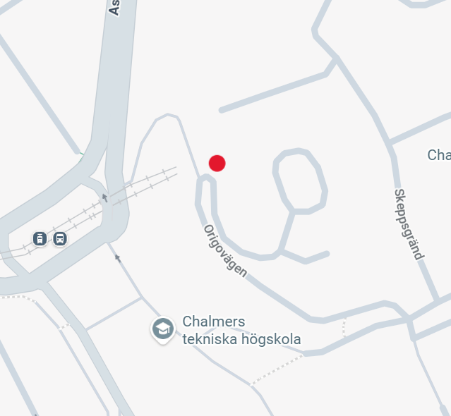

Om oss
Vår Historia
Kafé Solglimt grundades med drömmen om att skapa en plats där människor kan samlas, njuta av gott fika och känna sig som hemma. Vår resa började med kärleken till hembakade godsaker, nybryggt kaffe och det enkla nöjet i en varm, välkomnande atmosfär. Sedan starten har vi lagt stor vikt vid kvalitet, färska råvaror och att varje kopp kaffe och varje bulle serveras med omsorg och glädje. Vi tror på små stunder av vardagslycka – en perfekt kanelbulle, en saftig chokladboll eller en värmande kopp te kan göra dagen lite ljusare, och det är precis vad vi vill ge våra gäster.
Vår Vision
Vår vision är att vara mer än ett kafé – vi vill vara en solglimt i vardagen för alla som besöker oss. Genom att erbjuda hembakat fika, färska drycker och en trivsam miljö vill vi skapa en plats där människor kan koppla av, umgås och känna glädje. Vi strävar efter hållbarhet, kvalitet och omtanke i allt vi gör – från råvaror till service. Vårt mål är att varje gäst lämnar Kafé Solglimt med ett leende, en varm känsla och en längtan att komma tillbaka.
Vår personal
Vårt härliga team består av engagerade och serviceinriktade medarbetare som älskar kaffe, bakverk och att sprida glädje till våra gäster. Varje dag arbetar vi tillsammans för att ge dig den bästa upplevelsen – från nybryggt kaffe till färska bullar och ett leende som gör dagen ljusare. Vi är stolta över vår familjära stämning och vårt gemensamma mål: att varje gäst ska känna sig sedd, uppskattad och sugen på att komma tillbaka.
